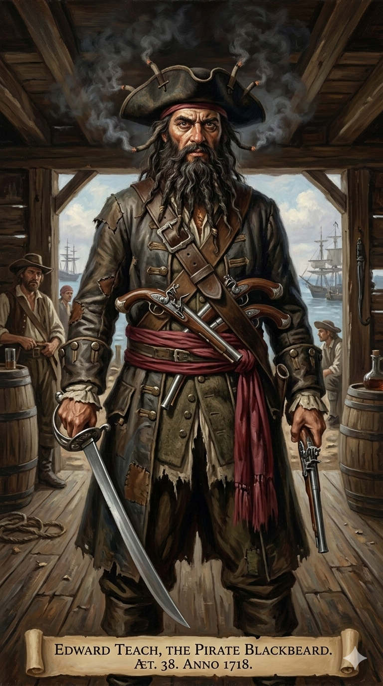
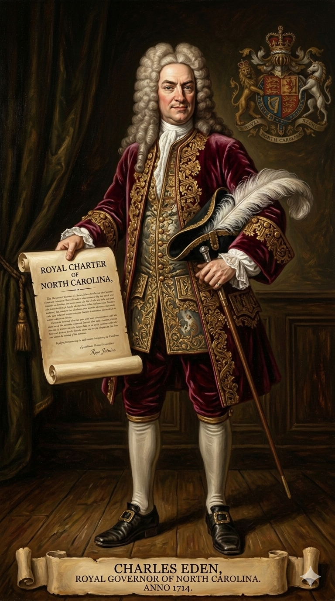
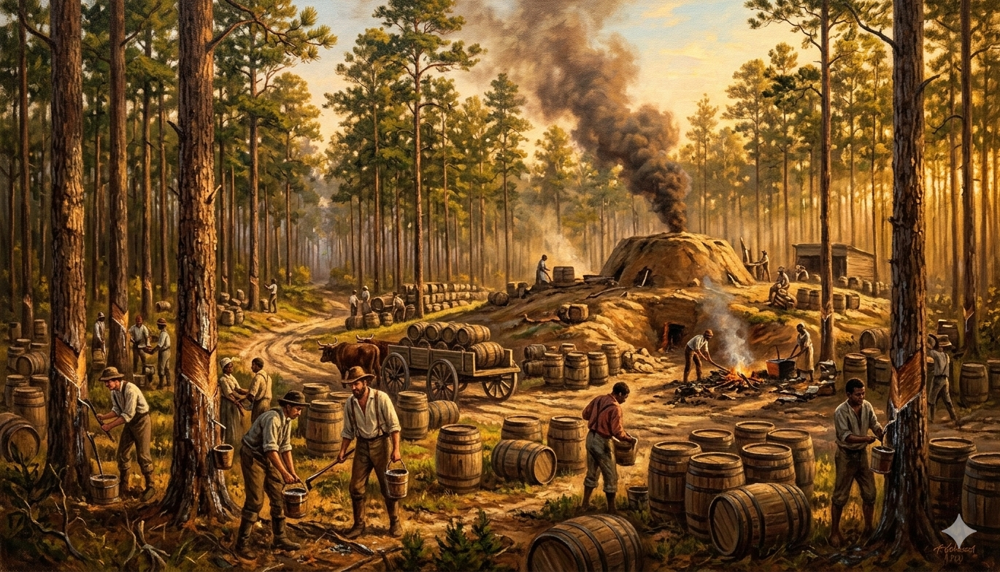
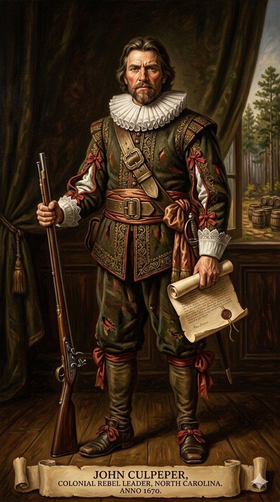

1. שנות פעילות, הקמה ויעדים
שנת הקמה: ההתיישבות הקבועה הראשונה החלה ב-1653 על ידי פליטים מווירג'יניה. ב-1663 נכללה בזיכיון ה"לורדים הבעלים". ב-1712 פוצלה רשמית למושבה נפרדת (North Carolina).
ישות מקימה: טכנית הוקמה על ידי "הלורדים הבעלים" (Lords Proprietors), קבוצת אצילים אנגלים שקיבלו את האדמה מהמלך צ'ארלס השני. בפועל, היא הוקמה מלמטה למעלה על ידי אנשים פשוטים שחיפשו אדמה שולית וזולה הרחק מעיני הממשל.
היעדים המקוריים: בעוד הלורדים רצו להפיק רווחים מסחריים ואגרו אחוזות בדרום (צ'ארלסטאון), היעד של המתיישבים בצפון קרוליינה היה הישרדות וחירות אזרחית. הם רצו להתרחק מחוקי הדת, מבעלי המטעים העשירים של וירג'יניה, ומגביית המיסים של הכתר הבריטי.
2. דמויות משקפות: משחיתות לפיראטיות

קרוליינה הצפונית לא נוסדה על ידי אישיות דגולה אחת כמו וינתרופ או פן. היא הייתה אוסף של עריקים. הדמות שמייצגת יותר מכל את האופי נטול החוק (Lawless) של חופיה בתחילת המאה ה-18 היא הפיראט המפורסם מכולם.
אדוארד טיץ' המכונה "שחור הזקן" (Edward Teach / Blackbeard) (סביבות 1680–1718)
הקשר למושבה: בשל המבנה הגיאוגרפי המורכב של חופי קרוליינה הצפונית, אוניות הצי הבריטי לא יכלו לנווט שם בקלות. שחור-הזקן ניצל זאת והפך את האי אוקראקוק (Ocracoke Island) למפקדת הפיראטים שלו. שם סחר בחופשיות בסחורות גנובות עם המתיישבים המקומיים, שלא יכלו להרשות לעצמם סחורות מיובאות מבריטניה.
סופו: השלטון בוירג'יניה השכנה שסבלה מהשוד מאס במצב. ב-1718 נשלח כוח ימי מיוחד שצד את שחור-הזקן, הרג אותו בקרב עקוב מדם, ותלה את ראשו הכרות על חרטום הספינה כאזהרה.

המושל צ'ארלס אידן (Charles Eden) (1673–1722)
המושל הקולוניאלי של צפון קרוליינה בתקופת "תור הזהב של הפיראטיות". הוא הפך לסמל של השלטון החלש והמושחת במושבה. היסטוריונים רבים, בני תקופתו, האמינו כי אידן העלים עין ממעשיו של שחור-הזקן בתמורה לנתח מהשלל. למעשה, מזכירו האישי של אידן נתפס כשברשותו סחורות גנובות מאחת הספינות ששדד הפיראט. עם זאת, הדבר לא הוכח רשמית מעולם, ואידן נשאר בתפקידו עד מותו.
3. אידאולוגיה: אנטי-אליטיזם
"האידאולוגיה" העיקרית הייתה פשוט להניח לאנשים לנפשם. המושבה התאפיינה ברוח דמוקרטית-עממית קשוחה:
- עמק השווים: האזור היה מקלט עבור משרתים חוזיים לשעבר (Indentured servants) שסיימו את חוזיהם בווירג'יניה אך לא יכלו להרשות לעצמם אדמות שם. הם היו חקלאים קטנים וגאים ששנאו אצולה והתנגדו לכל ניסיון לגבות מהם מיסים או לכפות עליהם את הכנסייה האנגליקנית.
- סובלנות כברירת מחדל: בשל היעדר שלטון מרכזי חזק, המושבה הפכה למקלט לכתות דתיות נרדפות כמו הקווייקרים, שזכו בה לחופש דת דה-פקטו פשוט כי לא היה מי שירדוף אותם.
4. גיאוגרפיה: "בית הקברות של האוקיינוס"
הגיאוגרפיה הייתה הגורם המכריע ביותר בעיצוב האופי הנפרד של צפון קרוליינה מדרומה:
- אאוטר בנקס (The Outer Banks): חופי קרוליינה הצפונית חסומים על ידי שרשרת ארוכה של איים צרים ודיונות חול. מאחוריהם נחים מפרצים ענקיים (Sounds) אך רדודים מאוד (כמו Albemarle Sound).
- היעדר נמלי עומק: בשל המים הרדודים והשרטונות הקטלניים (אזור שכונה "בית הקברות של האוקיינוס האטלנטי"), ספינות מסחר גדולות לא יכלו לעגון בקרוליינה הצפונית. משמעות הדבר: המושבה לא יכלה לייצא תוצרת חקלאית עצומה לאירופה, ולכן לא הוקמו בה ערי נמל עשירות כמו צ'ארלסטאון או בוסטון, והיא נותרה מבודדת וכפרית.
5. כלכלה: עטרן, זפת ועצי אורן

בשל העדר נמלים וקושי בייצוא, הכלכלה נשענה על משאבי הפנים והישרדות:
- חוות משפחתיות קטנות: גידלו טבק בהיקף קטן (ששונע בדרכים יבשתיות לוירג'יניה כדי להימכר משם), תירס וגידול חזירים חופשיים ביערות.
- "חומרי הצי" (Naval Stores): התעשייה המכניסה ביותר הייתה הפקת עטרן, זפת, טרפנטין וקורות עץ ממיליוני עצי ה"אורן ארוך-העלים" (Longleaf pine) שכיסו את האזור. חומרים אלו היו קריטיים לאטימת ספינות הצי הבריטי מפני מים. עובדי האדמה שם זכו לכינוי Tar Heels (עקבי זפת), כינוי של המדינה עד היום.
6. דמוגרפיה: אי של שוויון עני
דמוגרפית, קרוליינה הצפונית הייתה "עמק של ענווה בין שני הרי גאווה" (וירג'יניה ודרום קרוליינה):
- מעמד סוציו-אקונומי: רוב מוחלט של האוכלוסייה הלבנה היו חקלאים עניים, ללא תארים, שחיו בבקתות עץ פשוטות ועבדו במו ידיהם.
- מיעוט עבדים: בניגוד לדרום קרוליינה, שבה השחורים היו רוב האוכלוסייה, בצפון קרוליינה לא היו מטעי אורז או סוכר ענקיים. לכן, מספר האפריקאים-אמריקאים המשועבדים היה קטן בהרבה, אם כי העבדות בהחלט הייתה קיימת (בעיקר במזרח המדינה).
7. מאבקי השליטה: מרידות נגד מיסים

תושבי קרוליינה הצפונית פיתחו מסורת ארוכה של סילוק מושלים שלא מצאו חן בעיניהם, בטענה שהשלטון המרכזי רק גובה מיסים ולא מספק הגנה:
מרד קולפפר והפיצול הרשמי
- מועדי המאבק: 1677 (מרד קולפפר), 1712 (הפיצול), ו-1729 (רכישה מלכותית).
- מהלך המאבקים: האות הראשון למרדנות היה ב-1677 ("מרד קולפפר"). כאשר הכתר הבריטי חוקק את "חוקי הסחר" שניסו לכפות על חקלאי הצפון לשלם מכס על ייצוא טבק, המתיישבים הזועמים בהנהגת ג'ון קולפפר (John Culpeper) פשוט כלאו את סגן המושל ואת גובי המיסים, והקימו ממשלה משלהם ששלטה ללא הפרעה במשך שנתיים. בסופו של דבר קולפפר הועמד לדין באנגליה אך זוכה, מה שהעניק רוח גבית למורדים. "הלורדים הבעלים" בלונדון מעולם לא הצליחו באמת לשלוט בחלק הצפוני והמורד הזה של המושבה. הם התייאשו מהם, ובשנת 1712 מינו מושל נפרד באופן רשמי ל"צפון קרוליינה". ההפרדה הפכה לסופית בשנת 1729, כאשר המלך ג'ורג' השני פשוט קנה את הזיכיון מידי הלורדים, והפך את קרוליינה הצפונית למושבת כתר (Royal Colony) תחת שלטון בריטי ישיר.
8. מחקר אטימולוגי: North Carolina
North (צפון)
מקור: אנגלית גיאוגרפיתכיוון גיאוגרפי. הקידומת התווספה רשמית ב-1712, והיא מסמלת את הניתוק המוחלט של החקלאים העצמאיים והעניים בצפון ממעמד האצולה, בעלי המטעים וסוחרי העבדים שהתבססו סביב צ'ארלסטאון שבדרום (South).
Carolus (קרולוס)
מקור: לטיניתהמקור של המילה "קרוליינה" מגיע מהשם הלטיני Carolus, שהוא התרגום הרשמי לשם האנגלי Charles (צ'ארלס).
North Carolina (קרוליינה הצפונית)
הפירוש המלא הוא: "הארץ הצפונית של המלך צ'ארלס".
הלורדים הבעלים העניקו למושבה המקורית את השם בשנת 1663 כאות תודה למלך צ'ארלס השני על שהעניק להם את שטח האדמה העצום הזה, וכהכרת תודה על תמיכתם בו במהלך שנות גלותו ומלחמת האזרחים האנגלית.